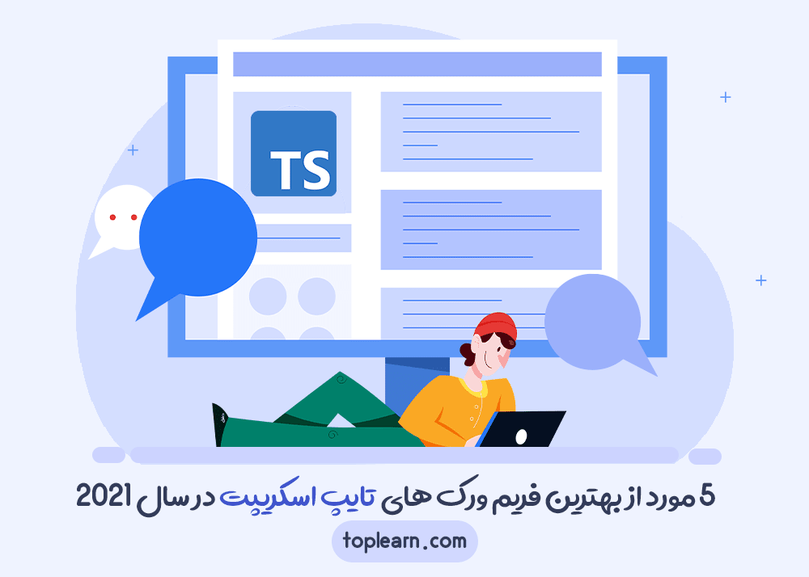

۱۴۳۲
تعداد دانشجويان

۶۵
تعداد اساتيد

۲۷
تعداد مقالات
مقالات وبلاگ
فریم ورکها و کتابخانههای CSS برای پروژه بعدی شما
بارها این را شنیده ایم، سال 2020 عصر اتومبیلهای پرنده است، اما بسیاری از توسعهدهندگان front-end هنوز با موقعیت div ها
۲۳۱ ۱۲۶ ایمان مدائنی

5 مورد از بهترین فریم ورک های تایپ اسکریپت در سال 2021
همه ما از محبوبیت و رشد فریمورک های NodeJS وJavaScript اطلاع داریم. اما آیا فریم ورکهای خاص تایپ اسکریپت را هم
۱۳ ۴۵ ایمان مدائنی
5 مورد از بهترین فریم ورک های تایپ اسکریپت در سال 2021
همه ما از محبوبیت و رشد فریمورک های NodeJS وJavaScript اطلاع داریم. اما آیا فریم ورکهای خاص تایپ اسکریپت را هم
۱۳ ۴۵ ایمان مدائنی
نکاتی برای راهاندازی مشاغل فریلنسر
کار فریلنسری میتواند راهی فوقالعاده برای کسب درآمد باشد. اما اگر به روش صحیح آن را انجام ندهید، میتواند بسیار دشوار باشد.
۶ ۳۲ ایمان مدائنی
دلایل یادگــیری و کار با وردپــــرس
یادگیری وردپرس برای ایجاد یک وبسایت ، این روز ها یکی از ساده ترین و کم هزینه ترین روش ها برای افرادی که دنبال این حوزه
۲۳۱ ۱۲۶ امیررضا ایزدی
.png)
4 روند برتر هوش مصنوعی در سال 2021
قبل از اینکه همهگیری جهانی در سال 2020 روی دهد، هوش مصنوعی (AI) و به طور خاص شاخه هوش مصنوعی که به عنوان
۱۳ ۴۵ ایمان مدائنی
.png)
ویژگی های جدید ASP.NET Core 5.0
در این مقاله مهمترین تغییرات در ASP.NET Core 5.0 را بررسی میکنیم.
۶ ۳۲ ایمان مدائنی
.png)
معایب و مزایای برنامهنویسی تابعی در C#
برنامه نویسی تابعی (Functional Programming) و مفاهیم آن در صنعت نرمافزار و برنامههای داده محور اهمیت بیشتری پیدا
۷۶ ۶۷ ایمان مدائنی

5 مهارت برتر توسعهدهنده که شما را به یک قهرمان تبدیل میکند
برنامهنویسی مانند ساختن وسیلهای با لگو است. هر توسعهدهنده میتواند مجموعه جدیدی از لگو را انتخاب کند و طبق دستورالعملها
۴۵ ۳۳ ایمان مدائنی

4 نوع تحلیل کد که هر توسعهدهندهای باید از آن استقبال کند
شما اغلب اصطلاح "تحلیل استاتیک" را میشنوید که به یک ابزار یا تکنیک شناختهشده اشاره دارد، به طوری که مطمئن میشویم تمام
۱۳۴۵ ۶۷ ایمان مدائنی